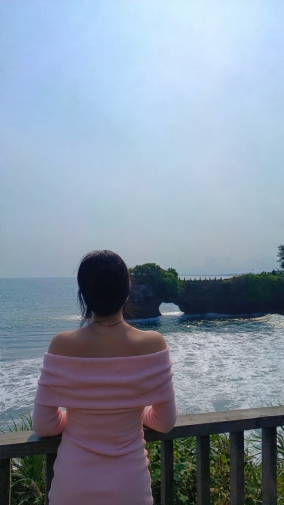
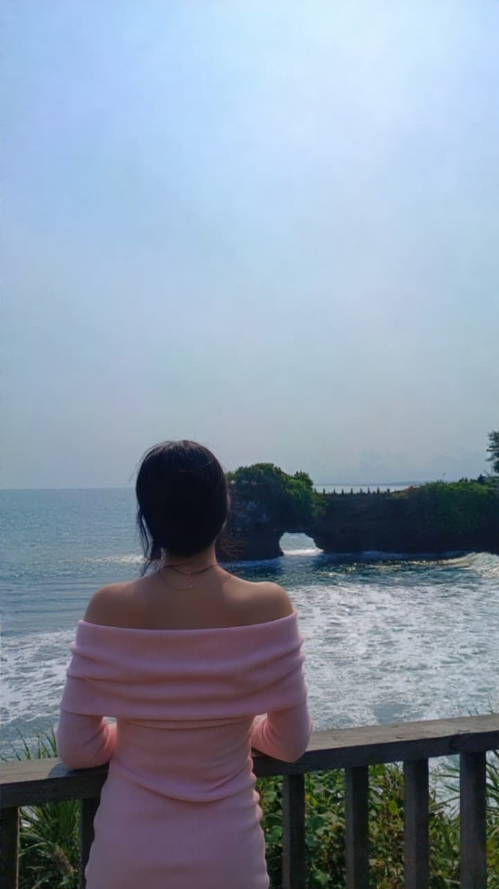

Dari pantai-pantai yang memesona hingga pura bersejarah yang sarat budaya, Bali penuh dengan destinasi unik yang sayang untuk dilewatkan. Dalam website wisata ini, Anda akan menemukan 5 tempat wisata di Bali yang wajib masuk daftar perjalanan Anda. Yuk, kita mulai menjelajahi satu per satu!
1. Pantai Kuta – Tempat Wisata Bali Favorit untuk Sunset & Surfing Pemula
Pantai Kuta yang terkenal dengan sunset yang memukau.
Pantai Kuta merupakan salah satu destinasi wisata paling ikonik di Pulau Bali yang terletak di Kabupaten Badung. Dahulu, kawasan Kuta dikenal sebagai desa nelayan sederhana dan pelabuhan perdagangan pada abad ke-19, sebelum akhirnya berkembang pesat menjadi pusat pariwisata internasional. Perkembangan tersebut mulai terlihat sejak tahun 1960-an ketika wisatawan asing mulai berdatangan dan menetap, sehingga mendorong pembangunan infrastruktur pariwisata secara besar-besaran.
Nama Kuta yang berarti “benteng” mencerminkan sejarah wilayah ini yang pernah memiliki peran penting dalam aktivitas pertahanan dan perdagangan pada masa lampau.Secara geografis, Pantai Kuta memiliki garis pantai yang panjang dengan hamparan pasir putih yang halus serta ombak yang cukup besar dan konsisten. Kondisi ini menjadikan Pantai Kuta sangat populer sebagai lokasi olahraga selancar, terutama bagi peselancar pemula. Selain itu, pantai ini juga menawarkan pemandangan alam yang menarik, terutama saat matahari terbenam. Panorama sunset di Pantai Kuta dikenal luas karena keindahan langit yang berubah warna menjadi jingga keemasan, menciptakan suasana yang romantis dan menenangkan bagi para pengunjung.Pantai Kuta juga didukung oleh fasilitas wisata yang sangat lengkap. Di sepanjang kawasan pantai dan sekitarnya terdapat berbagai hotel, penginapan, restoran, kafe, pusat perbelanjaan, hingga tempat hiburan malam.
Keberadaan fasilitas tersebut membuat wisatawan merasa nyaman dan mudah memenuhi kebutuhan selama berlibur. Selain wisata alam, Pantai Kuta juga menjadi pusat aktivitas sosial dan ekonomi masyarakat setempat, mulai dari pedagang kaki lima, penyewaan perlengkapan selancar, hingga pelaku seni dan budaya lokal.Dengan lokasi yang sangat strategis, hanya berjarak sekitar 15 menit dari Bandara Internasional I Gusti Ngurah Rai, Pantai Kuta menjadi destinasi yang mudah dijangkau oleh wisatawan domestik maupun mancanegara. Kombinasi antara sejarah, keindahan alam, aktivitas wisata, serta fasilitas yang memadai menjadikan Pantai Kuta sebagai simbol pariwisata Bali yang terus berkembang dan tetap diminati hingga saat ini.
Jika Anda butuh alternatif destinasi pantai yang lebih tenang?Kunjungi
Pantai Melasti
di Ungasan atau
Pantai Sanur
untuk suasana lebih santai.
Selain berenang dan berjemur, Anda bisa mencoba
surfingSurfing adalah olahraga air yang memanfaatkan ombak laut.
atau snorkeling. Jika ingin santai, cukup duduk di kursi pantai sambil menikmati kelapa muda atau makanan khas Bali di warung sekitar.
💡 Tips Berkunjung
Tiket masuk: Gratis, hanya perlu membayar sewa kursi atau payung sekitar Rp 50.000 – Rp 100.000.
Akses: Hanya 15 menit dari Bandara Internasional Ngurah Rai.
Waktu terbaik: Pagi atau sore hari untuk menghindari matahari terik.
📸Galery Pantai Kuta
2. Pura Tanah Lot – Pemandangan Ikonik di Tengah Laut
Wisatawan menikmati suasana di sekitar Pura Tanah Lot Bali saat air surut. Photo By Made Caesario.
Pura Tanah Lot, Ikon Wisata dan Spiritualitas yang Wajib Dikunjungi di BaliBali tidak hanya dikenal dengan pantainya yang indah, tetapi juga dengan kekayaan budaya dan nilai spiritual yang melekat kuat di setiap sudut pulau. Salah satu destinasi yang merepresentasikan keindahan alam sekaligus kesakralan budaya Bali adalah Pura Tanah Lot. Terletak di Desa Beraban, Kabupaten Tabanan, Pura Tanah Lot menjadi salah satu ikon wisata yang selalu menarik perhatian wisatawan lokal maupun mancanegara.
Pura Tanah Lot dibangun pada abad ke-16 oleh Dang Hyang Nirartha, seorang pendeta Hindu yang berperan penting dalam perkembangan ajaran Hindu di Bali. Hingga saat ini, pura tersebut memiliki nilai spiritual yang tinggi dan tetap difungsikan sebagai tempat ibadah umat Hindu. Karena kesuciannya, area utama pura hanya dapat dimasuki oleh umat Hindu yang hendak bersembahyang.
Keunikan utama Pura Tanah Lot terletak pada lokasinya yang berdiri di atas batu karang besar di tepi laut. Saat air laut pasang, pura ini tampak terpisah dari daratan dan seolah mengapung di tengah lautan. Pemandangan tersebut menjadikan Tanah Lot sebagai salah satu lanskap paling ikonik di Bali dan sering dijadikan latar foto oleh para wisatawan.
Selain nilai sejarah dan spiritual, Tanah Lot juga dikenal sebagai salah satu tempat terbaik untuk menikmati matahari terbenam. Pada sore hari, kawasan ini dipadati pengunjung yang ingin menyaksikan siluet pura berpadu dengan cahaya jingga matahari terbenam dan deburan ombak Samudra Hindia. Panorama tersebut menjadi daya tarik utama yang membuat Tanah Lot selalu ramai dikunjungi.
Pura Tanah Lot berjarak sekitar 13 kilometer dari pusat Kota Tabanan. Meski jaraknya relatif dekat, wisatawan diimbau untuk memperhitungkan waktu tempuh, terutama pada akhir pekan atau musim liburan, karena kawasan ini kerap mengalami kepadatan lalu lintas.Di balik keindahannya, Pura Tanah Lot juga memiliki legenda yang masih dipercaya oleh masyarakat setempat, Selain itu, pura Tanah Lot memiliki legenda Ular SuciUlar suci di Tanah Lot dikenal sebagai "ular laut" yang memiliki belang hitam dan putih. Menurut kepercayaan lokal, ular ini merupakan jelmaan dari selendang suci yang dimiliki oleh pendeta Dang Hyang Nirartha, yang merupakan pendiri Pura Tanah Lot.yang dipercaya masyarakat lokal untuk menjaga kesuciannya.Pengelola kawasan wisata mengimbau para pengunjung untuk tetap menjaga sikap, berpakaian sopan, dan mematuhi aturan selama berada di area pura. Dengan memadukan keindahan alam, sejarah, dan nilai spiritual, Pura Tanah Lot tidak hanya menjadi destinasi wisata unggulan Bali, tetapi juga simbol keharmonisan antara manusia, alam, dan budaya.
✨Apa yang bisa dilakukan di Pura Tanah Lot?
Menjelajahi Pura Batu Bolong, pura yang berada di tepi tebing dengan pemandangan laut yang spektakuler.
Menikmati sunset dari area tebing. Ini adalah momen terbaik untuk melihat keindahan pemandangan di pura ini.
Kunjungi website dibawah ini, untuk informasi lebih lanjut
3. Pura Uluwatu – Pura ini menawarkan pemandangan pantai yang mengagumkan.
Pura Uluwatu terletak diujung selatan Bali dan merupakan salah satu kuil paling dramatis dipulau ini.
Pura Luhur Uluwatu, Pura Suci di Ujung Tebing Selatan Bali.Pura Luhur Uluwatu merupakan salah satu pura kahyangan jagat yang memiliki peran penting dalam sistem spiritual umat Hindu di Bali. Pura ini terletak di Desa Pecatu, Kecamatan Kuta Selatan, Kabupaten Badung, Bali. Berada di ujung barat daya Pulau Bali, Pura Uluwatu berdiri megah di atas tebing batu karang setinggi sekitar 70 meter yang langsung menghadap ke Samudra Hindia.
Pura ini diperkirakan dibangun pada abad ke-11 oleh Mpu Kuturan dan kemudian disempurnakan oleh Dang Hyang Nirartha pada abad ke-16. Pura Luhur Uluwatu berfungsi sebagai pura penjaga arah barat daya Pulau Bali dan memiliki nilai spiritual yang sangat tinggi bagi masyarakat Hindu. Oleh karena itu, area utama pura hanya diperbolehkan untuk umat Hindu yang sedang beribadah.
Selain nilai religiusnya, Pura Uluwatu juga terkenal dengan panorama alamnya yang spektakuler. Tebing tinggi yang curam, deburan ombak besar, serta pemandangan laut lepas menjadikan pura ini sebagai salah satu destinasi wisata favorit di Bali. Waktu terbaik untuk berkunjung adalah sore hari, ketika pengunjung dapat menyaksikan matahari terbenam dengan latar belakang lautan luas dan siluet pura yang dramatis.
Kawasan Pura Uluwatu juga dikenal dengan keberadaan kawanan monyet yang hidup bebas di sekitar area pura. Pengunjung diimbau untuk berhati-hati terhadap barang bawaan seperti kacamata, topi, dan ponsel, karena monyet-monyet tersebut kerap mengambil barang milik wisatawan.Daya tarik lain yang tidak kalah terkenal adalah Tari Kecak UluwatuTari Kecak Uluwatu adalah tarian tradisional Bali yang dipertunjukkan di daerah Uluwatu di pulau Bali, Indonesia. Menampilkan paduan suara pria yang menghasilkan vokalisasi "cak-cak-cak" berirama, pertunjukan ini melibatkan gerakan koreografi dan drama dari Ramayana, sebuah puisi epik Hindu kuno kecakda.Pertunjukan tari ini biasanya digelar pada sore hingga menjelang malam hari di panggung terbuka dengan latar matahari terbenam dan laut. Perpaduan antara seni budaya, alam, dan suasana sakral menjadikan pertunjukan ini sangat diminati wisatawan.
Sebagai kawasan suci, pengunjung diwajibkan mengenakan kain dan selendang saat memasuki area pura. Pengelola juga mengimbau wisatawan untuk menjaga etika, kebersihan, serta menghormati adat dan kepercayaan setempat selama berada di kawasan Pura Luhur Uluwatu.Dengan keindahan alam yang menakjubkan, kekayaan budaya, dan nilai spiritual yang kuat, Pura Luhur Uluwatu tidak hanya menjadi destinasi wisata unggulan Bali, tetapi juga simbol penting dari warisan budaya dan keagamaan Pulau Dewata.
✨Aktivitas yang Bisa Dilakukan di Pura Luhur Uluwatu
Panorama tebing dan laut
Pengunjung dapat menikmati pemandangan Samudra Hindia dari atas tebing yang tinggi.
Deburan ombak besar dan angin laut menciptakan suasana yang khas dan menenangkan.
Menyaksikan matahari terbenam (sunset)
Pura Uluwatu dikenal sebagai salah satu spot sunset terbaik di Bali.
Sore hari adalah waktu favorit wisatawan untuk menikmati langit jingga
dengan latar laut lepas dan siluet pura.
Menonton pertunjukan Tari Kecak
Salah satu daya tarik utama di Uluwatu adalah pertunjukan Tari Kecak
yang digelar di panggung terbuka.
Pertunjukan ini biasanya berlangsung menjelang malam
dengan latar sunset yang sangat ikonik.
Berjalan santai di area pura
Terdapat jalur pejalan kaki di sepanjang tebing yang aman untuk dilalui wisatawan.
Jalur ini cocok untuk berjalan santai sambil menikmati pemandangan dan mengambil foto.
Berfoto dengan latar alam dan arsitektur pura
Keindahan arsitektur pura yang berpadu dengan tebing dan laut
menjadikan Uluwatu lokasi favorit untuk fotografi,
baik foto wisata, landscape, maupun prewedding.
Mengenal budaya dan nilai spiritual Bali
Wisatawan dapat belajar tentang fungsi Pura Luhur Uluwatu
sebagai pura kahyangan jagat serta memahami tradisi
dan kepercayaan masyarakat Hindu Bali.
Mengunjungi area sekitar dan pantai terdekat
Setelah dari pura, wisatawan bisa melanjutkan perjalanan
ke pantai-pantai di sekitar Uluwatu seperti Pantai Suluban,
Padang Padang, dan Bingin yang terkenal di kalangan peselancar.
Mengamati aktivitas monyet
Di kawasan pura terdapat monyet liar yang hidup bebas.
Mengamati mereka bisa menjadi pengalaman menarik,
namun pengunjung perlu berhati-hati dengan barang bawaan.
📸Galery Pura Uluwatu
4.Ubud – Terletak ditengah pulau,ubud di kenal dengan pemandangan sawah terasering yang indah.
Ubud adalah pusat seni dan budaya Bali.
Ubud merupakan salah satu destinasi wisata unggulan di Pulau Bali yang terletak di Kabupaten Gianyar. Kawasan ini dikenal luas sebagai pusat seni, budaya, dan spiritualitas yang menawarkan suasana tenang serta keindahan alam yang masih asri. Berbeda dengan kawasan pantai di Bali selatan, Ubud menghadirkan nuansa pedesaan dengan hamparan sawah, hutan tropis, dan aliran sungai yang menyejukkan.
Sebagai jantung kebudayaan Bali, Ubud memiliki banyak galeri seni, museum, dan sanggar seni tradisional. Beberapa tempat terkenal di antaranya Museum Puri Lukisan, Agung Rai Museum of Art (ARMA), dan berbagai galeri lukisan lokal. Selain itu, wisatawan dapat menyaksikan pertunjukan tari tradisional Bali seperti Tari Legong, Barong, dan Kecak yang rutin digelar di pura maupun istana kerajaan Ubud.Ubud juga dikenal sebagai destinasi wisata spiritual. Banyak wisatawan datang untuk mengikuti kegiatan yoga, meditasi, dan penyembuhan holistik. Tempat-tempat suci seperti Pura Taman Saraswati, Goa Gajah, dan Tirta Empul menjadi tujuan penting bagi wisatawan yang ingin mengenal lebih dalam nilai-nilai spiritual masyarakat Hindu Bali.
Dari sisi alam, Ubud menawarkan panorama yang memukau. Sawah terasering Tegalalang menjadi salah satu ikon wisata yang sering dikunjungi karena keindahan lanskapnya. Selain itu, Sacred Monkey Forest Sanctuary menjadi daya tarik tersendiri dengan keberadaan ratusan kera yang hidup bebas di kawasan hutan dan pura kuno.Tidak hanya budaya dan alam, Ubud juga menawarkan pengalaman kuliner dan belanja yang beragam. Ubud Art Market menyediakan berbagai kerajinan tangan, lukisan, dan suvenir khas Bali. Sementara itu, banyak restoran dan kafe di Ubud yang menyajikan masakan tradisional Bali hingga hidangan internasional dengan konsep sehat dan ramah lingkungan.
✨Aktivitas yang Bisa Dilakukan di Ubud, Bali
Menikmati wisata alam
Ubud dikelilingi keindahan alam berupa sawah terasering, hutan tropis, dan aliran sungai. Aktivitas yang sering dilakukan wisatawan meliputi kunjungan ke Sawah Terasering Tegalalang, berjalan santai di Campuhan Ridge Walk, serta menikmati suasana pedesaan yang tenang.
Menyaksikan pertunjukan seni dan budaya
Ubud dikenal sebagai pusat seni dan budaya Bali. Wisatawan kerap menonton pertunjukan tari tradisional seperti Tari Legong, Barong, dan Kecak yang dipentaskan di pura, sanggar seni, maupun di Puri Ubud pada waktu tertentu.
Mengunjungi museum dan galeri seni
Bagi pecinta seni, Ubud menawarkan berbagai museum dan galeri terkenal seperti Museum Puri Lukisan, ARMA, dan Neka Art Museum yang menampilkan karya seni tradisional hingga kontemporer.
Berinteraksi dengan satwa di Monkey Forest
Wisatawan sering mengunjungi Monkey Forest Ubud untuk melihat monyet yang hidup bebas di habitat alaminya, sekaligus menikmati kawasan hutan yang asri di tengah kota.
Mengikuti yoga dan relaksasi
Ubud menjadi tujuan favorit wisatawan untuk mengikuti kelas yoga, meditasi, dan spa tradisional Bali yang menawarkan ketenangan dan relaksasi tubuh serta pikiran.
Berbelanja dan menikmati kuliner
Aktivitas populer lainnya adalah berbelanja suvenir di Ubud Art Market serta menikmati kafe dan restoran dengan pemandangan alam yang khas.
📸Galery Ubud
5.Nusa Penida – Pulau ini menawarkan pemandangan pantai yang eksotis,tebing-tebing yang menjulang diatas laut,dan air yang jernih untuk snorkeling dan menyelam.
Nusa Penida adalaha pulau kecil yang terletak disebelah tenggara bali.
Nusa Penida merupakan pulau kecil yang berada di wilayah Kabupaten Klungkung, Provinsi Bali, dan terletak di sebelah tenggara Pulau Bali. Pulau ini termasuk dalam gugusan Kepulauan Nusa, bersama dengan Nusa Lembongan dan Nusa Ceningan. Akses menuju Nusa Penida relatif mudah, yaitu melalui jalur laut menggunakan fast boat dari beberapa pelabuhan utama di Bali seperti Sanur, Kusamba, dan Padang Bai, dengan waktu tempuh rata-rata sekitar 30 hingga 45 menit, tergantung kondisi cuaca dan gelombang laut.
Setibanya di Nusa Penida, wisatawan akan langsung disambut oleh suasana pulau yang tenang dan jauh dari hiruk-pikuk perkotaan. Infrastruktur wisata di pulau ini terus berkembang, mulai dari pelabuhan, jalan utama, hingga fasilitas akomodasi seperti penginapan, homestay, dan restoran lokal yang menyajikan kuliner khas Bali. Di sekitar Nusa Penida tersedia berbagai penginapan, mulai dari homestay sederhana hingga resort dengan pemandangan laut.
Pulau Nusa Penida dikenal luas sebagai destinasi wisata alam unggulan yang menawarkan lanskap alam dramatis dan memukau. Garis pantainya dihiasi oleh pantai-pantai eksotis dengan pasir putih, tebing-tebing karang yang menjulang tinggi dan langsung menghadap Samudra Hindia, serta perairan laut yang sangat jernih dengan gradasi warna biru yang menawan. Kondisi alam tersebut menjadikan Nusa Penida sebagai habitat berbagai biota laut, termasuk terumbu karang, ikan tropis, hingga pari manta yang menjadi daya tarik utama wisata bahari.
Keindahan alam Nusa Penida yang masih relatif alami dan belum banyak tersentuh pembangunan besar memberikan pengalaman wisata yang berbeda dibandingkan kawasan wisata Bali lainnya. Karakter alamnya yang menantang, berpadu dengan panorama yang fotogenik, menjadikan pulau ini sangat diminati oleh wisatawan pencinta petualangan, penyelam, serta fotografer alam. Tidak heran jika Nusa Penida sering disebut sebagai salah satu destinasi “hidden paradise” di Bali yang menawarkan keindahan alam autentik dan pengalaman wisata yang berkesan.
Nusa Penida berada dalam satu gugusan kepulauan dengan Nusa Lembongan dan Nusa Ceningan, yang dapat dicapai dengan perahu kecil dalam waktu sekitar 15–20 menit. Banyak wisatawan mengombinasikan kunjungan ke ketiga pulau ini dalam satu rangkaian perjalanan wisata.Dengan keindahan alam yang menakjubkan, ragam aktivitas wisata darat dan laut, serta lokasi yang strategis dekat dengan Pulau Bali, Nusa Penida menjadi destinasi yang menawarkan pengalaman wisata lengkap—mulai dari petualangan alam, relaksasi pantai, hingga wisata budaya dan spiritual.
✨Aktivitas yang Bisa Dilakukan di Nusa Penida
Nusa Penida memiliki banyak pantai ikonik seperti Kelingking Beach, Broken Beach (Pasih Uug), dan Angel’s Billabong. Ketiga lokasi ini berada di wilayah barat Nusa Penida dan saling berdekatan, dengan jarak tempuh sekitar 5–10 menit antar lokasi menggunakan kendaraan.
Snorkeling dan menyelam (diving)
Perairan Nusa Penida terkenal sangat jernih dan menjadi habitat berbagai biota laut. Spot snorkeling dan diving populer seperti Crystal Bay, Manta Point, dan Gamat Bay dapat dijangkau dalam waktu 15–30 menit dari Pelabuhan Toyapakeh. Di beberapa spot, wisatawan bahkan berkesempatan melihat ikan pari manta dan terumbu karang yang masih terjaga.
Berburu spot foto alam
Tebing-tebing tinggi dengan latar laut biru menjadikan Nusa Penida surga bagi fotografi alam. Spot seperti Kelingking Cliff dan Atuh Beach di wilayah timur menawarkan pemandangan dramatis yang sangat ikonik dan sering muncul di media sosial.
Mengunjungi tempat wisata religi
Selain wisata alam, Nusa Penida juga memiliki nilai spiritual tinggi. Salah satu tempat yang sering dikunjungi adalah Pura Goa Giri Putri, yang terletak di bagian timur pulau dan dapat ditempuh sekitar 40 menit dari pelabuhan utama. Pura ini berada di dalam gua alami dan menjadi tempat ibadah umat Hindu.
Menjelajahi wilayah timur dan barat Nusa Penida
Wilayah barat Nusa Penida (Kelingking, Broken Beach, Angel’s Billabong, Crystal Bay) relatif saling berdekatan dan dapat dikunjungi dalam satu hari. Sementara itu, wilayah timur Nusa Penida seperti Atuh Beach, Diamond Beach, dan Rumah Pohon Molenteng berjarak sekitar 1–1,5 jam dari area barat, sehingga disarankan dibagi dalam jadwal terpisah.


 



:max_bytes(150000):strip_icc()/water-temple-in-central-ubud-bali---indonesia-654314586-5c2aa593c9e77c00011d4aba.jpg)